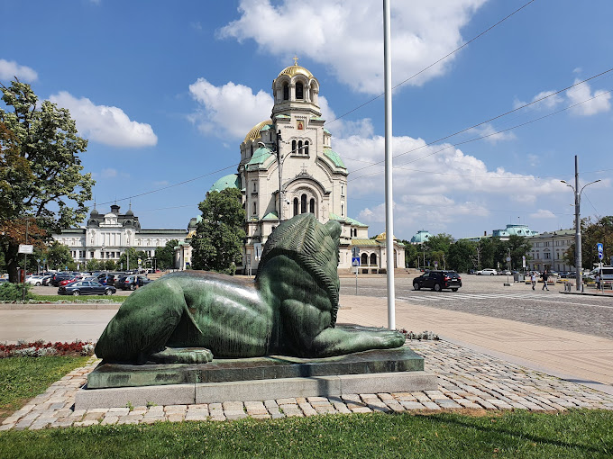

The City
Bulgaria.
The National Historical Museum
The National Historical Museum is a cultural and scientific organization that participates in the implementation of the state policy on the preservation of cultural values and museum work throughout the country. The main activity of the museum is the preservation and presentation of movable and immovable cultural values. In order to carry out this activity, the museum carries out scientific research, organizes and conducts scientific events (conferences, workshops and discussions), publishes scientific, popular science and advertising materials, publishes the results of the identification of cultural values - owned by individuals or legal entities, after receiving written consent of their owners, participates in field archaeological surveys on the territory of the country.
A scientific group of specialists with scientific degrees or holding an academic position has been created for the museum. The members of the scientific group, according to their expertise, carry out scientific processing of the museum fund, participate with reports in scientific forums, prepare and publish scientific works, study good practices in the field of museum work, engage in exhibition, collection and scientific popularization activities.
Sofia at Night? Is it Safe?There’s nothing to worry about! Despite Bulgaria’s reputation as the cradle of organized crime, corruption, etc, the streets of Sofia are very safe, and violent crimes are a rarity. Poorly-paved streets and pavements are going to be your main worry after a glass or two. Watch your step!
There are countless ways to travel around Sofia. However, there is one option that is not available and that’s Uber. Uber and all uber-like services are currently banned in Bulgaria. Therefore, you’ll have to stick to the traditional means of transportation.
Coming from the airport?
– Here’s how to get from the Airport to the city center.
What and Where?
Clubs and Live Venues
Exe Club – one of Sofia’s newest clubs quickly became a favorite of a lot of locals. Every Friday this club offers an event with trap and hip-hop music. Every Saturday – house & techno music with international guest DJs
Sofia Live Club
National Palace of Culture
– a hub for all sorts of cultural events, concerts, exhibitions and festivals. Make sure to check their program while in Sofia.
Sofia Opera and Ballet House
Bulgaria is proud to have a long history and high standards of opera and ballet performances. Therefore, if you are a fan, visiting the local opera & ballet house is a must
Hall Bulgaria
For the lovers of classical performances, it’s where the Sofia Philharmonic Orchestra performs most often.
Terminal 1
A great way to check what events are happening in Sofia during your visit is this website. They’ll keep you up to date with the most interesting performances in town.
You can reach Sofia airport from all over Europe.
Museums in Sofia
You already know that Sofia has a long and turbulent history. That’s the perfect recipe for all museum lovers. There is a wide range of museums and galleries in Sofia. Here are some of our favorites:
National Archeological Museum
Did you know that Bulgaria ranks 3rd in Europe when it comes to the number of archeological sites and findings (after Italy and Greece)? The country’s rich archeological heritage is best presented in this museum. You will find it right in front of the Bulgarian Presidency building in the heart of Sofia.
The Red Flat
Everyday Life in Socialist Bulgaria is Sofia’s new and first communist history museum. Actually, it is not a museum in the traditional sense. As the name suggests it is actually a flat. By entering the home of a typical Bulgarian family from the 1980’s you will be able to experience the lifestyle of people in the former Eastern Bloc like never before.
Sofia History Museum
Situated in the building of the former central public bath, this museum follows almost all historical periods (with the exception of the socialist period). However, its main focus is the history of Sofia from 1878 to 1944.